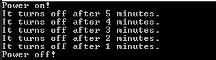
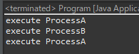
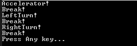

[Design pattern] 3-3. コマンドパターン(Command pattern)
こんにちは。明月です。
この投稿はデザインパターンのコマンドパターン(Command pattern)に関する説明です。
コマンドパターン(Command pattern)は少し複雑なパターンですが、簡単に言うと発動子(invoker)が受信子(receiver)を実行するためのコマンド(command)を中に置くパターンです。
普通のコマンドパターンの例なら電灯の例で説明しますが、スウィッチ(invoker)があり、電灯(receiver)があります、それを電源のONとOFFのコマンド(command)が型です。

Reference - https://en.wikipedia.org/wiki/Command_pattern
#pragma once
#include <stdio.h>
#include <iostream>
using namespace std;
// 電灯クラス(reciever)
class Light {
public:
// 電灯が付ける関数
void on() {
// コンソールに出力
cout << "Power on!" << endl;
}
// 電灯が消す関数
void off() {
// コンソールに出力
cout << "Power off!" << endl;
}
};
// コマンドインターフェース
class ICommand {
public:
// 関数抽象化
virtual void execute() = 0;
};
// 電灯を付けるクラス、コマンドインターフェース継承
class TurnOnCommand : public ICommand {
private:
// 電灯インスタンスメンバー変数
Light* light;
public:
// コンストラクタ
TurnOnCommand(Light* light) {
// メンバー変数設定
this->light = light;
}
// 実行関数再定義
void execute() {
// 電灯を付ける関数を実行
this->light->on();
}
};
// 電灯を消すクラス、コマンドインターフェース継承
class TurnOffCommand : public ICommand {
private:
// 電灯インスタンスメンバー変数
Light* light;
public:
// コンストラクタ
TurnOffCommand(Light* light) {
// メンバー変数設定
this->light = light;
}
// 実行関数再定義
void execute() {
// 電灯を消す関数を実行
this->light->off();
}
};
// スウィッチ(invoker)
class Switch {
private:
// コマンドメンバー変数
ICommand* turnOnCmd;
ICommand* turnOffCmd;
public:
// コンストラクタ
Switch(ICommand* turnOnCmd, ICommand* turnOffCmd) {
// メンバー変数設定
this->turnOnCmd = turnOnCmd;
this->turnOffCmd = turnOffCmd;
}
// 実行関数
void run() {
// 電灯を付けるコマンド実行
this->turnOnCmd->execute();
// コンソールに出力
cout << "It turns off after 5 minutes." << endl;
cout << "It turns off after 4 minutes." << endl;
cout << "It turns off after 3 minutes." << endl;
cout << "It turns off after 2 minutes." << endl;
cout << "It turns off after 1 minutes." << endl;
// 電灯を消すコマンド実行
this->turnOffCmd->execute();
}
};
// 実行関数
int main() {
// 電灯インスタンス生成
Light light;
// コマンドインスタンス生成
TurnOnCommand turnOnCmd(&light);
TurnOffCommand turnOffCmd(&light);
// スウィッチインスタンス生成(switchはキーワードだから変数宣言ができない...;;;)
Switch button(&turnOnCmd, &turnOffCmd);
// 実行
button.run();
return 0;
}

上の例をみると理解しやすくなります。コマンドパターンは発動子(invoker)の関数をクラス別に分け割ったことです。
関数はインスタンスで実装することができないので、関数別でインスタンスを作った型がコマンドパターン(Command pattern)です。
import java.util.ArrayList;
import java.util.List;
// Nodeクラス
class Node {
// processA関数
void processA() {
// コンソールに出力
System.out.println("execute ProcessA");
}
// processB関数
void processB() {
// コンソールに出力
System.out.println("execute ProcessB");
}
}
// コマンド抽象クラス
abstract class ACommand {
// Nodeクラスメンバー変数
private Node node;
// コンストラクタ
public ACommand(Node node) {
// メンバー変数設定
this.node = node;
}
// メンバー変数取得関数
protected Node getNode() {
return this.node;
}
// 実行関数抽象化
public abstract void execute();
}
// ProcessACommandクラス、抽象クラスACommand継承
class ProcessACommand extends ACommand {
// コンストラクタ
public ProcessACommand(Node node) {
super(node);
}
// 実行
public void execute() {
// Nodeインスタンスを取得してprocessA関数実行
getNode().processA();
}
}
// ProcessBCommandクラス、抽象クラスACommand継承
class ProcessBCommand extends ACommand {
// コンストラクタ
public ProcessBCommand(Node node) {
super(node);
}
// 実行
public void execute() {
// Nodeインスタンスを取得してprocessB関数実行
getNode().processB();
}
}
// Procedureクラス
class Procedure {
// リストメンバー変数
private List<ACommand> commands = new ArrayList<>();
// コマンド追加
public void addCommand(ACommand command) {
// リストにコマンド追加
commands.add(command);
}
// 実行
public void run() {
// リストの順番とおりに
for (var cmd : commands) {
// 実行
cmd.execute();
}
}
}
public class Program {
// 実行関数
public static void main(String[] args) {
// Nodeインスタンス生成
var node = new Node();
// Procedureインスタンス生成
var procedure = new Procedure();
// ProcessACommandインスタンス追加
procedure.addCommand(new ProcessACommand(node));
// ProcessBCommandインスタンス追加
procedure.addCommand(new ProcessBCommand(node));
// ProcessACommandインスタンス追加
procedure.addCommand(new ProcessACommand(node));
// 実行
procedure.run();
}
}

関数をクラスのインスタンスで生成ができれば、上みたいにlistなどで命令順番を設定することもできます。
using System;
using System.Collections.Generic;
// 自動車クラス
class Car
{
// 左折関数
public void LeftTurn()
{
// コンソールに出力
Console.WriteLine("LeftTurn!");
}
// 右折関数
public void RightTurn()
{
// コンソールに出力
Console.WriteLine("RightTurn!");
}
// アクセル関数
public void Accelerator()
{
// コンソールに出力
Console.WriteLine("Accelerator!");
}
// ブレーキ関数
public void Break()
{
// コンソールに出力
Console.WriteLine("Break!");
}
}
// コマンド抽象クラス
abstract class ACommand
{
// メンバー変数
private Car car = new Car();
// コンストラクタ
public ACommand(Car car)
{
// メンバー変数設定
this.car = car;
}
// 実行
public void Execute()
{
// 抽象関数実行
Run(car);
}
// 抽象関数
protected abstract void Run(Car car);
}
// 左折コマンドクラス
class LeftTurnCommand : ACommand
{
// コンストラクタ
public LeftTurnCommand(Car car) : base(car) { }
// 抽象関数再定義
protected override void Run(Car car)
{
// 左折関数実行
car.LeftTurn();
}
}
// 右折コマンドクラス
class RightTurnCommand : ACommand
{
// コンストラクタ
public RightTurnCommand(Car car) : base(car) { }
// 抽象関数再定義
protected override void Run(Car car)
{
// 右折関数実行
car.RightTurn();
}
}
// アクセルコマンドクラス
class AcceleratorCommand : ACommand
{
// コンストラクタ
public AcceleratorCommand(Car car) : base(car) { }
// 抽象関数再定義
protected override void Run(Car car)
{
// アクセル関数実行
car.Accelerator();
}
}
// ブレーキコマンドクラス
class BreakCommand : ACommand
{
// コンストラクタ
public BreakCommand(Car car) : base(car) { }
// 抽象関数再定義
protected override void Run(Car car)
{
// ブレーキ関数実行
car.Break();
}
}
// 運転クラス
class Driving
{
// コマンドリスト
private List<ACommand> cmds = new List<ACommand>();
// ブレーキコマンドメンバー変数
private ACommand breakCmd;
// コンストラクタ
public Driving(ACommand breakCmd)
{
// ブレーキコマンドメンバー変数設定
this.breakCmd = breakCmd;
}
// コマンド追加関数
public void AddCommand(ACommand cmd)
{
// コマンド追加
cmds.Add(cmd);
}
// 出発
public void Start()
{
// コマンドリストからコマンド取得
foreach (var cmd in this.cmds)
{
// コマンド実行
cmd.Execute();
// ブレーキコマンド実行
this.breakCmd.Execute();
}
}
}
// 実行クラス
class Program
{
// 実行関数
static void Main(string[] args)
{
// 自動車インスタンス生成
Car car = new Car();
// 運転インスタンス生成
Driving driving = new Driving(new BreakCommand(car));
// 命令追加(コマンドインスタンス追加)
driving.AddCommand(new AcceleratorCommand(car));
driving.AddCommand(new LeftTurnCommand(car));
driving.AddCommand(new RightTurnCommand(car));
// 出発
driving.Start();
// 任意のキーを押してください
Console.WriteLine("Press Any key...");
Console.ReadLine();
}
}

コマンドパターンは重要なポイントは発動子(invoker)の関数をクラス別で割り分けしたことです。つまり、様々な関数を複合的にコマンドパターンで作成することができます。
ここでの例は発動子(invoker)のクラスを一つだけ生成してコマンドパターンを作りましたが、数多く発動子クラスをコマンドパターン別で割り分けてストラテジーパターンとともに使うことができます。
ここまでデザインパターンのコマンドパターン(Command pattern)に関する説明でした。
ご不明なところや間違いところがあればコメントしてください。
- [Design pattern] 3-6. ステートパターン(State pattern)2021/11/17 20:04:47
- [Design pattern] 3-5. メメントパターン(Memento pattern)2021/11/16 20:01:36
- [Design pattern] 3-4. イテレータパターン(Iterator pattern)2021/11/15 19:31:28
- [Design pattern] 3-3. コマンドパターン(Command pattern)2021/11/05 17:01:42
- [Design pattern] 3-2. 責任の連鎖パターン(Chain of responsibility pattern)2021/11/04 19:27:58
- [Design pattern] 3-1. ストラテジーパターン(Strategy pattern)2021/11/03 18:38:52
- [Design pattern] 2-7. ファサードパターン(Facade pattern)2021/11/02 19:32:31
- [Design pattern] 2-6. プロキシパターン(Proxy pattern)2021/11/01 19:42:44
- [Design pattern] 2-5. フライウェイトパターン(Flyweight pattern)2021/10/29 19:48:27
- [Design pattern] 2-4. デコレーターパターン(Decorator pattern)2021/10/28 20:11:13
- [Design pattern] 2-3. ブリッジパターン(Bridge pattern)2021/10/27 20:32:21
- [Java] 61. Spring bootでRedisデータベースを利用してセッションクラスタリング設定する方法2022/03/01 18:20:52
- [Java] 60. Spring bootでApacheの連結とロードバランシングを設定する方法2022/02/28 18:45:48
- [Java] 59. Spring bootのJPAでEntityManagerを使い方2022/02/25 18:27:48
- [Java] 58. EclipseでSpring bootのJPAを設定する方法2022/02/23 18:11:10
- [Java] 57. EclipseでSpring bootを設定する方法2022/02/22 19:04:49
- [Python] Redisデータベースに接続して使い方2022/02/21 18:23:49
- [Java] Redisデータベースを接続して使い方(Jedisライブラリ)2022/02/16 18:13:17
- [C#] Redisのデータベースを接続して使い方2022/02/15 18:46:09
- [CentOS] Redisデータベースをインストールする方法とコマンドを使い方2022/02/14 18:33:07
- [Design pattern] 3-6. ステートパターン(State pattern)2021/11/17 20:04:47
- [Design pattern] 3-5. メメントパターン(Memento pattern)2021/11/16 20:01:36
- [Design pattern] 3-4. イテレータパターン(Iterator pattern)2021/11/15 19:31:28
- [CentOS] Linux環境(CentOS)でCassandra(NoSQL DB)をインストールする方法(DBeaverブラウザでNoSQL使い方)2021/11/12 17:33:58
- [Design pattern] 3-3. コマンドパターン(Command pattern)2021/11/05 17:01:42
- [Window] apache-tomcatでロードバランシング(Load balancing)する方法とセッションクラスタリング（セッション共有）2021/11/05 16:58:45